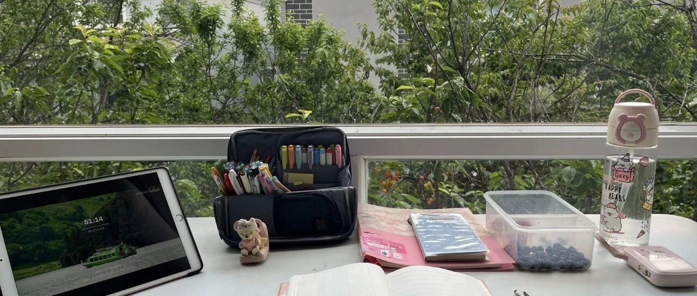

好爽！我都提前退休4年了！
点击关注 秋秋在分享
一起实现财务自由退休
大家好，我是秋秋呀。
现在的我在大理租的别墅里写下这段文字，一抬头满眼绿色：

好像每一种我所期待的生活，最终都实现了。
我是26岁决定提前退休的，那是2022年夏天，后来大家感兴趣我还写过理财规划：
好多人以为我做决定的那一刻有个准确的时间线。
比如存钱数字精准的变成300万（我FIRE目标是4%被动收入每月1万），或者遇到重大事件以至于豁然开悟了。
其实都没有。
就是在某个下午，我午休完，认为我有换一种生活方式的能力。
事实证明这件事确实也不难，操作下来，我每月开销比计划的少得多，甚至现在我们一家三口月开销也才一万。
刚提前退休的前两年，我是把体验感当成人生目标，二十多岁的年纪是很喜欢尝试的。
于是我一个人去旅行，天南海北，看沙漠看雪山看火山看草原。
还去寺庙住了半个月，遇到了我现在的好朋友，去道观做义工，去宠物领养组织当摄影师。
花钱体验的事也有大把。比如喜欢去游乐园我办了环球影城年卡，每天都能去玩。喜欢追星去看了十几场演唱会，北京很方便参加各种明星宣传活动我就趁机见了好多人。
我还报班学了画画，去社区和老爷爷老奶奶一起上过兴趣班，还去体验了不同职业……
以前的我总觉得金钱会产生利息，其实体验感也是。
年轻的时候我们去做的一些充满乐趣的事，它会在你一生中产生复利。这件事你能讲到60多岁，复利有40年那么久。
而真的到退休年龄才去做，那回忆里彩色的时间也变短了。
退休的后两年，我结婚生了小孩，我们决定离开待了七年的北京，旅居生活。
我们在威海度过夏天，秋天的时候经过浙江福建广州，在三亚过了冬天，又在今年春天抵达云南。
FIRE的这四年，就是这种感觉：好像每一个梦想我都会实现！
那也会有人说等娃上学了就不自由了，未来养老你都计划好了？买房了不？
这也是我准备要写连载的原因。不着急，通通都会写。
很多人对FIRE的误解，是把它等同于“躺平摆烂”“不工作不赚钱”，甚至觉得是逃避现实。
但我这四年走下来，越来越清楚：提前退休，不是放弃人生，而是重新掌控人生。
不把时间卖给不喜欢的工作，不把精力消耗在无效社交和职场内耗里，而是把每一分每一秒，都花在自己、家人和真正热爱的事情上。
有人问：一家三口只花一万，在外面旅居，真的够吗？
够，而且过得很舒服。
不是抠抠搜搜的穷游，我们五星酒店全季都会住，但绝对是去掉虚荣消费后的极简生活。
买过大牌、会为喜欢买单，但是不跟风轻奢、不为面子买单。
房租、吃饭、交通、孩子日常用品、偶尔出去玩，全部加起来，这几年也在预算内。甚至还能剩下一些。
也有人问：不上班，不会空虚吗？
说实话，我不上班其实很久了，24岁我就不上班裸辞了，只是那时候选择做博主做视频输出内容，其实还是像上班一样工作，只是地点变成家里，时间更自由。
所以提前退休是连具体的工作也没了。
包括我不想更新视频直接不做，我不必为了赚钱而焦虑，我想写文章不想写都没事，也不担心流量和大家记不记得我。
我对金钱和固定感的需求降低，内心很有安全感，提前退休适应的很快。
人真正的价值，从来不是各种头衔，而是如何度过每一天。
工作也好，看书、运动、做饭、陪孩子、学新东西、、打理庭院……这些事也很有意义。
我退休后的每一天都被小事填满，却比以前更充实、更有底气，所以没觉得空虚，也可能年轻有无限能量吧。
至于大家最关心的其他问题：
• 孩子上学了怎么办？还能继续旅居吗？
• 未来养老、医疗、社保，怎么安排的？
• 300万怎么存下来的？投资怎么分配？
• 不买房，一直租房你心里不慌吗？未来会在哪里定居？
• FIRE之后，你还有没有额外收入？
这些我之前都写过，只是不连贯。
于是趁着大理旅居的半年，我再集中写一下，在后面的连载里，一篇篇讲透。
存钱方法论、资产配置思路、被动收入搭建、带娃的FIRE方案、旅居城市挑选、低成本生活技巧。
我踩过的坑、我的决定、 我真实的焦虑与和解都会有。
当然，我不是什么财务专家，只是一个普通女生在26岁选择财务自由提前退休。
我的经历证明，FIRE从来不是少数人的特权，而是每个人都可以的生活方式。
我们不需要一夜暴富，也不需要极端吃苦，最重要的，想清楚自己真正想要什么。
算好数字，做好规划，普通人也可以提前下班、提前自由。
提前退休4年，我最大的感悟是：
人生很短，来不及将就；人生也很长，长到足够有时间慢慢活成喜欢的模样。
后面的故事，我慢慢写。
一起财务自由、提前退休吧！